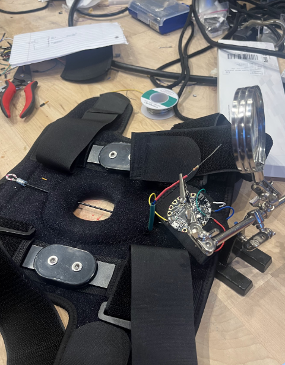
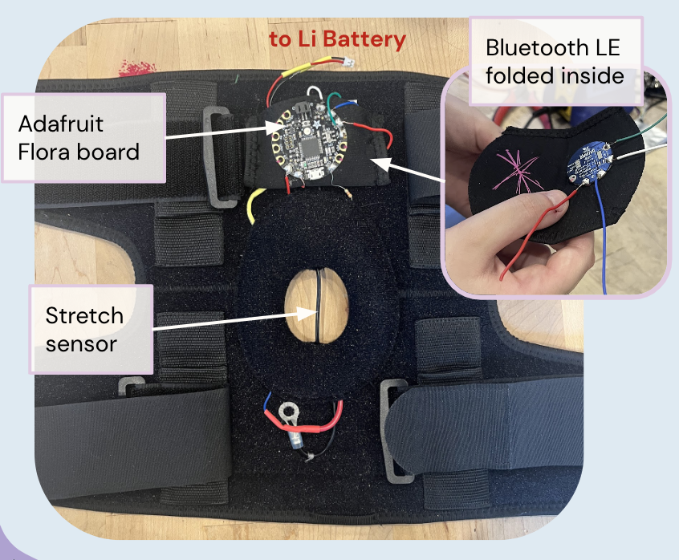
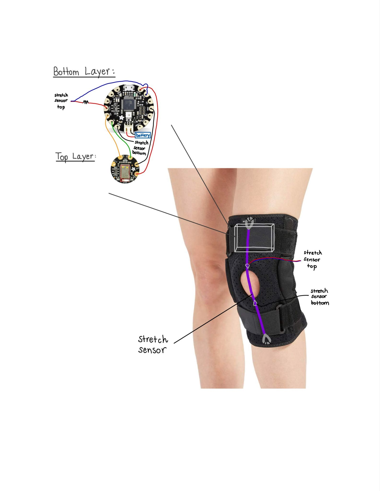
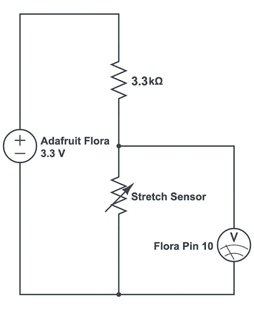
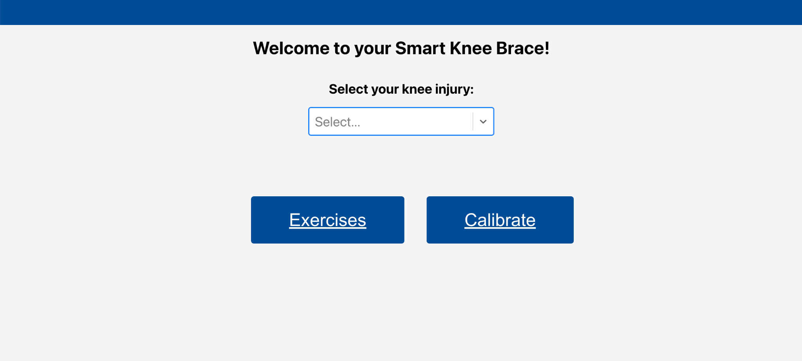
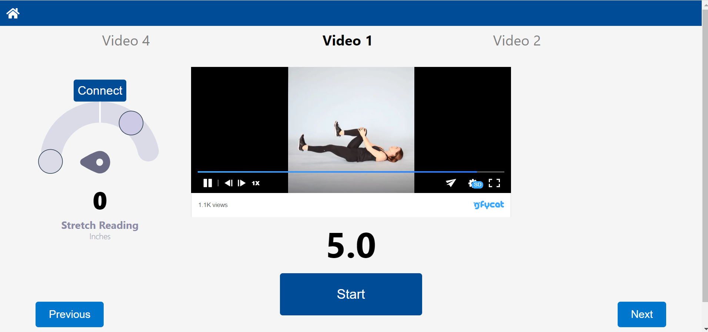

The Team
Team Lead: Nick Pavlosky
Hardware: Annette Park, Anushka Narasani, Shannon Li, Noor Saiedy
Circuitry: Martin Bourdev, Amanda Weckerly
Software: Amy Li, Jacob Sandler
Motivation and Overview
Diagnosis and monitoring of knee pathologies through measurement of knee flexion/extension.
Features
- Lightweight integrated circuitry.
- Live sensor data feed via Bluetooth LE.
- Companion web app that can guide user through stretches.
- Measure your knee flexion angle in real time!

Hardware
Assembly
- Prepared brace through modifications. Seam-ripped side channels for metal joints to use as pocket for circuitry.
- Replace circuitry connections by soldering components.
- Secure stretch sensor with ring terminal connector.
- Sew components to their respective position.

Circuitry
Design
- Stretch sensor over the knee changes resistance with respect to its length, causing the voltage value to change with length.
- Use a voltage divider to measure the voltage between the stretch sensor and 3.3kΩ resistor
- This voltage value is sent to the adafruit flora wearable electronic, then to the bluetooth chip and computer program that analyzes the change in voltage
Illustrations by Amanda Weckerly.


Software
Features
- Dropdown menu to select injury
- Bluetooth connection to get stretch sensor values
- Personalized calibration for min and max values
- Guided recovery stretches with video references
- Gauge with stretch percentage
- Display gauge with target indicator
- Timer countdown

